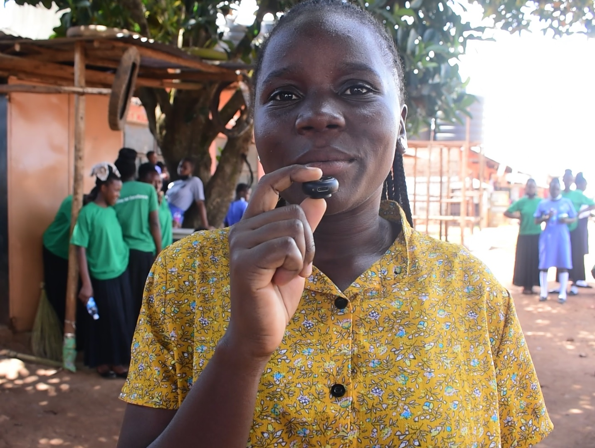
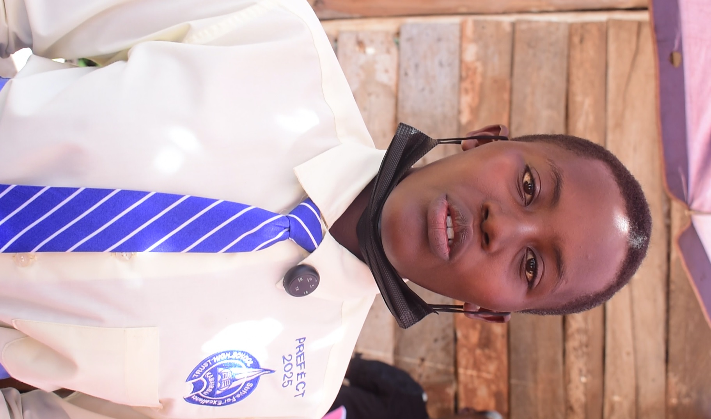

SERVICE ABOVE SELF: Trust High School Girls Transform Kijjabijo for Women’s Day
Armed with enthusiasm: Trust High School students cleaning the streets of Kijjabijo.KABUBBU — In a heartwarming display of community spirit, the girls of Trust High School Kabubbu took their International Women’s Day celebrations far beyond the classroom, hitting the streets of Kijjabijo trading center to lead a massive cleanup exercise.
Armed with brooms, collection bags, and infectious energy, a dedicated team of approximately 100 students spent the morning sweeping the trading center, collecting rubbish, and spreading joy among the local business community.
Honoring the Matriarchs
The service didn't end with a clean street. After ensuring Kijjabijo C was spotless, the students paid moving visits to the community’s elderly women—the matriarchs aged 60 and above. The girls arrived bearing essential gifts, including soap, sugar, and bread, to show appreciation for the generations that came before them.
— Hajji Mohammed Muyimbwa, Chairman Kijjabijo C
 A moment of wisdom: Students seated with a 100-year-old resident of Kijjabijo during their gift-giving tour.
A moment of wisdom: Students seated with a 100-year-old resident of Kijjabijo during their gift-giving tour.
Leadership in Action

Ms. Nanfuka Annet
Team Leader / Senior Woman: "We chose this activity to teach our girls that cleanliness isn't just for the home—it’s a habit that must follow you to your place of work and throughout society."

Mutesi Hope
Sanitary Prefect: "I was so happy to come out and demonstrate to fellow women the importance of environmental hygiene. We lead by example."
Nabukenya Lydia Irene
Assistant Head Girl: "Moving out of school to show love to our parent figures in the community has been a beautiful experience. We wanted to show them they are loved."
PHOTO GALLERY